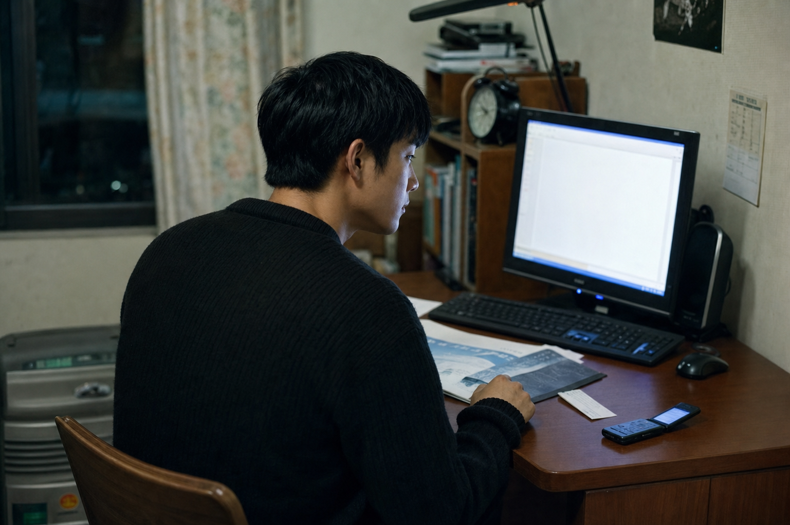

127. 나고야에서 온 답장
유즈키의 이메일은 새벽 한 시 십칠분에 도착했다.
용식은 방 불을 끄지 못한 채 책상 앞에 앉아 있었다. 모니터에는 학교 겨울 단기 프로그램 안내문을 편집한 파일이 열려 있었고, 옆에는 도쿄 항공권 예약 확인서가 접힌 채 놓여 있었다. 방 안은 히터 때문에 건조했고, 책상 위 물컵은 반쯤 비어 있었다.
메일 알림이 뜨자 그는 마우스를 움직였다.
보낸 사람 이름은 나카타 유즈키였다.

그는 한동안 클릭하지 못했다.
초연에게 보낼 자료.
서윤에게 보여 준 표.
유즈키가 기다리는 겨울.
세 개의 겨울이 같은 책상 위에 놓였다.
메일을 열었다.
문장은 서툴렀지만 정성스러웠다. 일본어 문장 사이사이에 한글 단어가 섞여 있었다. 겨울, 약속, 눈. 그녀가 천천히 찾아 쓴 단어들이 화면 위에서 조금씩 빛났다.
용식은 손을 멈췄다.
물어보지 않은 것들.
유즈키는 모르는 척한 것이지, 아무것도 느끼지 못한 사람이 아니었다. 나리타 공항 상점가에서 초연에게 줄 립밤과 화과자를 고르던 순간, 그녀는 캐묻지 않았지만 봤다. 그 침묵이 시간이 지나 나고야까지 따라간 것이다.
그는 답장을 쓰려 했다.
손이 키보드 위에서 멈췄다.
무슨 말을 써야 할까.
겨울에 갈게.
진짜 보고 싶어.
나고야도 좋아.
그 모든 말은 사실이었다. 동시에 다른 두 사람을 속이는 말이었다.
폴더폰이 울렸다.
용식은 모니터 오른쪽 아래 시계를 봤다. 새벽 한 시 반. 초연은 이 시간에도 깨어 있었다.
그는 의자에서 일어났다. 침대, 책상, 모니터를 찍으면 이메일 화면이 걸릴 수 있었다. 그는 모니터를 끄고, 책상 위 예약 확인서를 서랍에 밀어 넣었다. 그 움직임이 너무 익숙해져 있었다.
찰칵.
폴더폰 카메라 소리가 방 안에 울렸다.
초연의 답장은 바로 오지 않았다. 용식은 다시 모니터를 켰다. 유즈키의 메일 화면이 어둠 속에서 다시 떠올랐다.
그는 답장을 썼다.
문장을 쓰는 동안 손이 몇 번이나 멈췄다. 꼭 갈게요. 그는 그 말을 지우지 않았다.
전송 버튼을 누르기 직전, 초연에게서 답장이 왔다.
용식은 심장이 내려앉았다.
방 사진 속 책상 위 검은 모니터. 초연은 그것까지 봤다.
그는 답장을 쓰지 못했다.
모니터에는 유즈키에게 보내는 메일이 아직 전송되지 않은 채 떠 있었다. 뒤쪽 서랍에는 서윤과 갈 항공권 확인서가 들어 있었다. 폴더폰 화면에는 초연의 질문이 남아 있었다.
그는 모니터 전원 버튼을 다시 눌렀다. 화면이 꺼졌다.
유즈키에게 보내려던 답장은 전송되지 않았다.
어둠 속에서 폴더폰만 다시 울렸다.